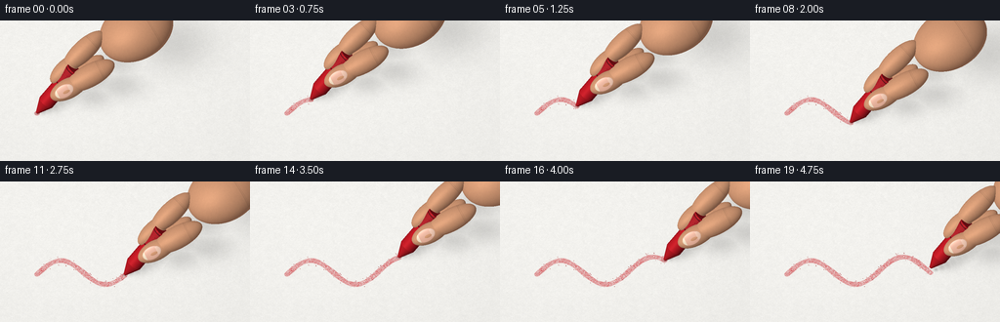
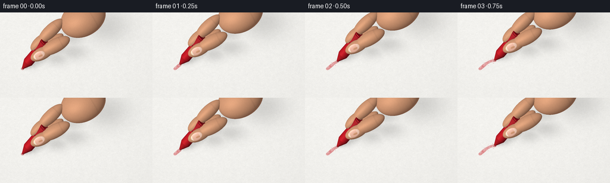
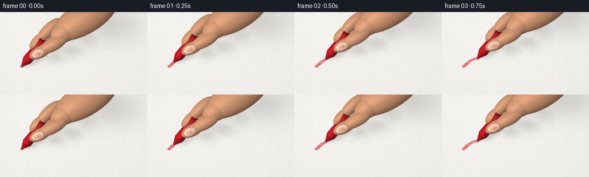
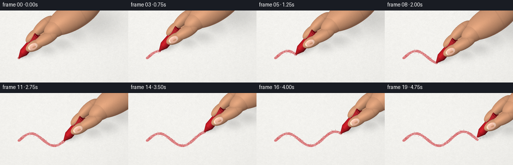

CODING AGENTS AS PIXEL WORLD MODELS
traex/GPT-6.1-Sol · phygen_033
点击播放 · 原生 RGB 像素
逐轮保存的候选
回放视频、检查图与代码变化。
每份候选均可单独播放。实际图片检查记录在下方工具轨迹中。
候选 01播放与检查图
点击播放 · 原生 RGB 像素


展开代码变化
--- 上一保存版本
+++ 本次保存版本
@@ -0,0 +1,321 @@
+"""Procedural macro study: a red wax crayon moving on toothy white paper.
+All geometry, textures, illumination, and motion are generated mathematically.
+"""
+from pathlib import Path
+import json
+import numpy as np
+from PIL import Image, ImageFilter
+import artifact_io
+
+ROOT = Path(__file__).resolve().parent
+SPEC = json.loads((ROOT / 'task_spec.json').read_text())
+W, H = SPEC['width'], SPEC['height']
+S = 3
+WW, HH = W*S, H*S
+rng = np.random.default_rng(3307)
+
+# A fixed macro camera; the entire background is the actual paper plane.
+def unit(x):
+ x = np.asarray(x, dtype=np.float64)
+ return x / np.linalg.norm(x, axis=-1, keepdims=True)
+cam = np.array([0., -118., 168.])
+target = np.array([0., 1., 0.])
+fwd = unit(target-cam)
+right = unit(np.cross(fwd, [0,0,1]))
+up = unit(np.cross(right, fwd))
+px, py = np.meshgrid((np.arange(WW)+.5)/WW-.5, .5-(np.arange(HH)+.5)/HH)
+O = cam + px[...,None]*108*right + py[...,None]*(108*H/W)*up
+D = np.broadcast_to(fwd, O.shape)
+plane_t = -O[...,2]/D[...,2]
+plane = O + plane_t[...,None]*D
+
+# Multiscale paper texture. It stays attached to the page, not to the camera.
+TS = 1600
+fine = rng.random((TS, TS)).astype(np.float32)
+def soften(a, radius):
+ im=Image.fromarray(np.uint8(a*255))
+ return np.asarray(im.filter(ImageFilter.GaussianBlur(radius)),dtype=np.float32)/255
+coarse = soften(rng.random((TS,TS)),5.5)
+mid = soften(rng.random((TS,TS)),1.3)
+# Short, mostly horizontal cellulose fibers and pores.
+fiber_im = Image.new('L',(TS,TS),128)
+from PIL import ImageDraw
+fd = ImageDraw.Draw(fiber_im)
+for _ in range(39000):
+ x,y=rng.integers(0,TS,2)
+ length=int(rng.integers(2,12))
+ fd.line((int(x),int(y),int(x+length),int(y+rng.integers(-2,3))), fill=int(rng.integers(72,191)),width=1)
+fibers=np.asarray(fiber_im,dtype=np.float32)/255
+
+def tex(a, x,y):
+ # 160mm square; interpolation keeps grain stable under moving geometry.
+ xx=np.mod((x+80)/160*TS,TS)
+ yy=np.mod((y+80)/160*TS,TS)
+ ix=np.floor(xx).astype(np.int32); iy=np.floor(yy).astype(np.int32)
+ dx=xx-ix; dy=yy-iy
+ return ((1-dx)*(1-dy)*a[iy,ix]+dx*(1-dy)*a[iy,(ix+1)%TS]+(1-dx)*dy*a[(iy+1)%TS,ix]+dx*dy*a[(iy+1)%TS,(ix+1)%TS])
+
+X,Y=plane[...,0],plane[...,1]
+fine_p=tex(fine,X,Y)
+mid_p=tex(mid,X,Y)
+coarse_p=tex(coarse,X,Y)
+fiber_p=tex(fibers,X,Y)
+paper_tone = (0.974 + (fine_p-.5)*.040 + (mid_p-.5)*.11 + (coarse_p-.5)*.22 + (fiber_p-.5)*.068)
+paper_tone *= 1-.025*((X+20)/85)**2-.018*((Y-20)/65)**2
+paper_base = np.clip(paper_tone[...,None]*np.array([250.,249.,245.]),0,255)
+
+# Orthogonal basis about the upward-pointing crayon.
+axis=unit([.60,.34,.725])
+u=unit(np.cross(axis,[0,0,1]))
+v=unit(np.cross(axis,u))
+light=unit([-0.50,-0.36,0.79])
+view=-fwd
+
+# Intersections. These are local analytic geometry, not an external renderer.
+def ellipsoid_intersect(ro,rd,c,r,basis):
+ po=(ro-c)@basis
+ dd=rd@basis
+ p=po/r; d=dd/r
+ a=np.sum(d*d,axis=-1); b=np.sum(p*d,axis=-1); cc=np.sum(p*p,axis=-1)-1
+ disc=b*b-a*cc
+ t=(-b-np.sqrt(np.maximum(disc,0)))/a
+ t=np.where((disc>=0)&(t>0),t,np.inf)
+ safe=np.where(np.isfinite(t),t,0)
+ local=po+safe[...,None]*dd
+ normal=unit((local/(r*r))@basis.T)
+ return t,normal,local
+
+def cone_intersect(ro,rd,start,ax,length,r0,r1):
+ q=ro-start
+ zz=q@ax; dz=rd@ax
+ qp=q-zz[...,None]*ax; dp=rd-dz[...,None]*ax
+ k=(r1-r0)/length
+ rad=r0+k*zz
+ a=np.sum(dp*dp,axis=-1)-(k*dz)**2
+ b=np.sum(qp*dp,axis=-1)-rad*k*dz
+ cc=np.sum(qp*qp,axis=-1)-rad**2
+ disc=b*b-a*cc
+ sqrt=np.sqrt(np.maximum(disc,0))
+ t1=(-b-sqrt)/a; t2=(-b+sqrt)/a
+ z1=zz+t1*dz; z2=zz+t2*dz
+ ok1=(disc>=0)&(t1>0)&(z1>=0)&(z1<=length)
+ ok2=(disc>=0)&(t2>0)&(z2>=0)&(z2<=length)
+ t=np.minimum(np.where(ok1,t1,np.inf),np.where(ok2,t2,np.inf))
+ for zcap,r in [(0,r0),(length,r1)]:
+ tc=(zcap-zz)/dz
+ qc=qp+tc[...,None]*dp
+ hit=(tc>0)&(np.sum(qc*qc,axis=-1)<=r*r)
+ t=np.minimum(t,np.where(hit,tc,np.inf))
+ safe=np.where(np.isfinite(t),t,0)
+ pp=q+safe[...,None]*rd
+ z=pp@ax
+ pr=pp-z[...,None]*ax
+ normal=unit(pr-k*(r0+k*z)[...,None]*ax)
+ cap0=np.abs(z)<.0001; cap1=np.abs(z-length)<.0001
+ normal=np.where(cap0[...,None],-ax,normal)
+ normal=np.where(cap1[...,None],ax,normal)
+ return t,normal,pp
+
+def basis_long(direction):
+ z=unit(direction)
+ a=unit(np.cross(z,[0,0,1]))
+ b=unit(np.cross(z,a))
+ return np.stack([a,b,z],axis=1)
+
+# The stroke is a continuous path; frame samples reveal additional deposited wax.
+def path(t):
+ t=np.asarray(t)
+ return np.stack([-38+62*t, -11+6.8*np.sin(2*np.pi*1.55*t)+3*t, np.full_like(t,.50)],axis=-1)
+steps=np.linspace(0,1,1000)
+stroke_points=path(steps)
+# Persistent wax density with tiny rough, irregular gaps from paper tooth.
+coverage=np.zeros((HH,WW),np.float32)
+crumbs=[]
+last=0
+
+
+def projected_shadow(c,r):
+ # Soft ellipsoidal cast shadow, along the same direction as the key light.
+ cx=c[0]-c[2]*light[0]/light[2]
+ cy=c[1]-c[2]*light[1]/light[2]
+ height=c[2]
+ spread=.35+height*.09
+ rr=np.array(r)+spread
+ d=((X-cx)/rr[0])**2+((Y-cy)/rr[1])**2
+ return np.exp(-1.3*d)
+
+frames=[]
+for fi in range(SPEC['frames']):
+ # The last frame lifts the nib fractionally away from the completed line.
+ progress=min(fi/18.,1.)
+ stop=int(round(progress*(len(steps)-1)))
+ for j in range(last,stop+1):
+ p=stroke_points[j]
+ width=1.30 + .11*np.sin(j*.043)+.055*np.sin(j*.43)
+ dist2=(X-p[0])**2+(Y-p[1])**2
+ stamp=np.clip(1-dist2/(width*width),0,1)
+ coverage=np.maximum(coverage,stamp)
+ last=stop+1
+ tip=path(progress)
+ tip=tip.copy()
+ if fi==19:
+ tip[2]+=3.3
+ # Wax pigments stick to high paper ridges; pale pinholes remain in the stroke.
+ tooth=np.clip((fine_p-.13)*1.38 + (mid_p-.5)*1.7,0,1)
+ striae=.79+.21*np.sin(Y*21.5+np.sin(X*.75))**2
+ ink=np.clip(coverage*2.7,0,1)*tooth*striae
+ ink *= .87
+ pigment=np.stack([184+fine_p*27, 26+fine_p*16, 34+fine_p*13],axis=-1)
+ image=paper_base*(1-ink[...,None])+pigment*ink[...,None]
+ # Little flakes of broken wax: a few fixed grains trail each completed pass.
+ if fi>0 and fi<19:
+ for k in range(3):
+ tt=max(0,progress-rng.uniform(.004,.026))
+ cp=path(tt)
+ offset=rng.choice([-1,1])*rng.uniform(1.4,2.5)
+ crumbs.append((cp[0]+rng.uniform(-.45,.45),cp[1]+offset,rng.uniform(.10,.23)))
+ for cx,cy,cr in crumbs:
+ d=((X-cx)**2+(Y-cy)**2)/(cr*cr)
+ a=np.clip((1-d)*2,0,1)*.78
+ image=image*(1-a[...,None])+np.array([155,30,33])*a[...,None]
+
+ # Crayon piece: an exposed wax point, a short shaft, and a small paper sleeve.
+ geom=[]
+ geom.append(('cone',tip,axis,6.5,.60,3.55,'wax_tip'))
+ geom.append(('cone',tip+axis*6.5,axis,20.5,3.55,3.55,'wax'))
+ geom.append(('cone',tip+axis*18.0,axis,8.6,3.62,3.62,'sleeve'))
+
+ # Fingers enter from the upper-right. The index is behind the crayon and
+ # the rounded thumb presses on the near side, keeping the tip on the paper.
+ grip=tip+axis*19.8
+ thumb_dir=unit([.88,.36,.30])
+ tb=basis_long(thumb_dir)
+ thumb_c=grip + np.array([2.0,-4.8,1.4])
+ geom.append(('ell',thumb_c, np.array([4.6,4.1,9.0]),tb,'skin_thumb'))
+ geom.append(('ell',thumb_c+thumb_dir*10.2+np.array([0,.2,.8]),np.array([5.1,4.6,11.8]),tb,'skin'))
+ ib=basis_long([.73,.57,.38])
+ index_c=grip+np.array([.4,4.3,2.7])
+ geom.append(('ell',index_c,np.array([4.0,3.9,8.4]),ib,'skin_index'))
+ geom.append(('ell',index_c+ib[:,2]*10.8+np.array([0,0,1.2]),np.array([4.6,4.4,11.5]),ib,'skin'))
+ # The side of the middle finger subtly supports the grip further back.
+ mb=basis_long([.77,.53,.34])
+ middle_c=grip+np.array([6.8,5.5,-3.5])
+ geom.append(('ell',middle_c,np.array([4.5,4.1,12.8]),mb,'skin'))
+ palm_c=grip+np.array([31,19,11])
+ geom.append(('ell',palm_c,np.array([13.5,10.3,17]),basis_long([.85,.5,.2]),'skin'))
+
+ # A softly curved thumbnail sits on the front-upper face of the thumb.
+ nail_normal=unit([-.1,-.68,.74])
+ nail_long=unit(thumb_dir-nail_normal*(thumb_dir@nail_normal))
+ nail_side=unit(np.cross(nail_long,nail_normal))
+ nb=np.stack([nail_side,nail_long,nail_normal],axis=1)
+ nail_c=thumb_c-thumb_dir*2.0+nail_normal*3.70
+ geom.append(('ell',nail_c,np.array([2.8,4.3,.42]),nb,'nail'))
+
+ shadow=np.zeros((HH,WW))
+ # Cylinder shadow is sampled along its length with height-dependent penumbra.
+ for q in np.linspace(0,27,13):
+ c=tip+axis*q
+ radius=max(.55,min(3.55,.60+q*2.95/6.5))
+ sh=projected_shadow(c,[radius*.95,radius*1.05])
+ strength=.11+.15*np.exp(-c[2]/8)
+ shadow=np.maximum(shadow,sh*strength)
+ for g in geom:
+ if g[0]=='ell' and g[-1].startswith('skin'):
+ c,r,b=g[1:4]
+ radi=np.sqrt(np.sum((b*r[None,:])**2,axis=1))
+ sh=projected_shadow(c,[radi[0],radi[1]])*.13
+ shadow=np.maximum(shadow,sh)
+ # Pin-sharp contact darkness immediately under the contacting nib.
+ contact=np.exp(-((X-tip[0])**2/.9+(Y-tip[1])**2/.42))*.20
+ if fi<19: shadow=np.maximum(shadow,contact)
+ image*=1-shadow[...,None]
+
+ nearest=plane_t.copy()
+ normals=np.zeros_like(O)
+ localpos=np.zeros_like(O)
+ mats=np.full((HH,WW),-1,np.int16)
+ for gi,g in enumerate(geom):
+ if g[0]=='cone':
+ _,c,a,le,r0,r1,mat=g
+ t,n,loc=cone_intersect(O,D,c,a,le,r0,r1)
+ else:
+ _,c,r,b,mat=g
+ t,n,loc=ellipsoid_intersect(O,D,c,r,b)
+ hit=t<nearest
+ nearest=np.where(hit,t,nearest)
+ normals=np.where(hit[...,None],n,normals)
+ localpos=np.where(hit[...,None],loc,localpos)
+ mats=np.where(hit,gi,mats)
+
+ # Wax is satiny, skin diffuse with fine pores, nails faintly glossy.
+ half=unit(light+view)
+ for gi,g in enumerate(geom):
+ hit=mats==gi
+ if not np.any(hit): continue
+ n=normals[hit]; loc=localpos[hit]
+ world=(O+D*nearest[...,None])[hit]
+ mat=g[-1]
+ nl=np.maximum(0,n@light)
+ nv=np.maximum(0,n@view)
+ nh=np.maximum(0,n@half)
+ noise=tex(fine,world[:,0]*2.2+world[:,2]*.3,world[:,1]*2.2)
+ slow=tex(mid,world[:,0]*.65,world[:,1]*.65)
+ illum=.43+.60*nl
+ if mat.startswith('wax') or mat=='sleeve':
+ zz=loc@axis
+ theta=np.arctan2(loc@v,loc@u)
+ scratches=np.sin(theta*61+np.sin(zz*1.8))*np.sin(theta*99+zz*.16)
+ if mat=='wax_tip':
+ base=np.array([197.,27.,37.])
+ texture=.94+.08*noise+.033*scratches
+ shine=.12*nh**27+.035*nh**6
+ # Wax dust and worn horizontal facets near the end.
+ texture-=.07*np.maximum(0,np.sin(zz*8+theta*7))*(zz<2.6)
+ elif mat=='wax':
+ base=np.array([192.,25.,36.])
+ texture=.96+.065*noise+.022*scratches
+ shine=.18*nh**34+.025*nh**5
+ else:
+ base=np.array([173.,34.,42.])
+ texture=.97+.08*noise
+ shine=.035*nh**15
+ # Two understated dark-red ink bands at the wrapper's boundaries.
+ stripe=(zz<.58)|((zz>7.8)&(zz<8.22))
+ texture=np.where(stripe,texture*.55,texture)
+ # Tiny parallel print lines on the side, not synthetic labels.
+ printed=(zz>2.2)&(zz<6.1)&(np.sin(theta*10)>0.94)&(np.cos(zz*3)>-.3)
+ texture=np.where(printed,texture*.76,texture)
+ col=base*illum[:,None]*texture[:,None]+shine[:,None]*np.array([255,166,142])
+ elif mat=='nail':
+ # Translucent pale-pink nail with a warm cuticle and thin ivory free edge.
+ length=loc[:,1]
+ base=np.tile([225.,173.,151.],(len(loc),1))
+ edge=length<-3.0
+ base[edge]=[237,216,190]
+ lunula=(length>2.3)&(abs(loc[:,0])<1.8)
+ base[lunula]=[231,192,171]
+ col=base*(.64+.42*nl[:,None]) + (.20*nh**55)[:,None]*255
+ col*= (.995+.01*np.sin(loc[:,1]*15))[:,None]
+ else:
+ base=np.array([216.,157.,120.])
+ mottled=.97+.06*noise+.06*(slow-.5)
+ # Wrinkles travel around the finger, and remain attached to its skin.
+ z=loc[:,2]
+ crease=np.exp(-((z-4.9)/.14)**2)+.65*np.exp(-((z-5.5)/.12)**2)
+ crease*=np.clip((n[:,2]+.25)*1.4,0,1)
+ mottled*=1-.095*crease
+ shade=.52+.48*nl+.055*(1-nv)**2
+ col=base*shade[:,None]*mottled[:,None]
+ col+=(.075*nh**24)[:,None]*np.array([244,193,151])
+ # Soft red scattering toward shadowed rounded edges.
+ col[:,0]+=7*(1-nl)*(1-nv)
+ image[hit]=col
+
+ # The macro lens resolves the contact zone; very mild grain, warm highlights.
+ image=np.uint8(np.clip(image,0,255))
+ out=Image.fromarray(image).resize((W,H),Image.Resampling.LANCZOS)
+ frames.append(np.asarray(out))
+ print(f'rendered {fi+1}/{SPEC["frames"]}',flush=True)
+
+artifact_io.save(np.stack(frames).astype(np.uint8),ROOT)
候选 02播放与检查图
点击播放 · 原生 RGB 像素


展开代码变化
--- 上一保存版本
+++ 本次保存版本
@@ -161,10 +161,10 @@
if fi==19:
tip[2]+=3.3
# Wax pigments stick to high paper ridges; pale pinholes remain in the stroke.
- tooth=np.clip((fine_p-.13)*1.38 + (mid_p-.5)*1.7,0,1)
+ tooth=np.clip((fine_p-.20)*2.4 + (mid_p-.5)*2.2,0,1)
striae=.79+.21*np.sin(Y*21.5+np.sin(X*.75))**2
ink=np.clip(coverage*2.7,0,1)*tooth*striae
- ink *= .87
+ ink *= .93
pigment=np.stack([184+fine_p*27, 26+fine_p*16, 34+fine_p*13],axis=-1)
image=paper_base*(1-ink[...,None])+pigment*ink[...,None]
# Little flakes of broken wax: a few fixed grains trail each completed pass.
@@ -201,8 +201,11 @@
mb=basis_long([.77,.53,.34])
middle_c=grip+np.array([6.8,5.5,-3.5])
geom.append(('ell',middle_c,np.array([4.5,4.1,12.8]),mb,'skin'))
- palm_c=grip+np.array([31,19,11])
- geom.append(('ell',palm_c,np.array([13.5,10.3,17]),basis_long([.85,.5,.2]),'skin'))
+ # The thumb-index web joins the fingers into a continuous hand silhouette.
+ web_c=grip+np.array([21,9.5,8.8])
+ geom.append(('ell',web_c,np.array([8.2,7.5,13.5]),basis_long([.81,.55,.19]),'skin'))
+ palm_c=grip+np.array([35,19,12])
+ geom.append(('ell',palm_c,np.array([12.5,10.8,27]),basis_long([.85,.5,.2]),'skin'))
# A softly curved thumbnail sits on the front-upper face of the thumb.
nail_normal=unit([-.1,-.68,.74])
可观测工具轨迹
实际执行的命令与返回图片。
命令 1exit 0
/bin/bash -lc 'ls -la && cat prompt.txt && cat GENERATION_RULES.md && cat task_spec.json'
命令 2exit 0
/bin/bash -lc "cat artifact_io.py && python - <<'PY'
import numpy, PIL
print('ready')
PY"命令 3exit 0
/bin/bash -lc "cat > generate.py <<'PY'
\"\"\"Procedural macro study: a red wax crayon moving on toothy white paper.
All geometry, textures, illumination, and motion are generated mathematically.
\"\"\"
from pathlib import Path
import json
import numpy as np
from PIL import Image, ImageFilter
import artifact_io
ROOT = Path(__file__).resolve().parent
SPEC = json.loads((ROOT / 'task_spec.json').read_text())
W, H = SPEC['width'], SPEC['height']
S = 3
WW, HH = W*S, H*S
rng = np.random.default_rng(3307)
# A fixed macro camera; the entire background is the actual paper plane.
def unit(x):
x = np.asarray(x, dtype=np.float64)
return x / np.linalg.norm(x, axis=-1, keepdims=True)
cam = np.array([0., -118., 168.])
target = np.array([0., 1., 0.])
fwd = unit(target-cam)
right = unit(np.cross(fwd, [0,0,1]))
up = unit(np.cross(right, fwd))
px, py = np.meshgrid((np.arange(WW)+.5)/WW-.5, .5-(np.arange(HH)+.5)/HH)
O = cam + px[...,None]*108*right + py[...,None]*(108*H/W)*up
D = np.broadcast_to(fwd, O.shape)
plane_t = -O[...,2]/D[...,2]
plane = O + plane_t[...,None]*D
# Multiscale paper texture. It stays attached to the page, not to the camera.
TS = 1600
fine = rng.random((TS, TS)).astype(np.float32)
def soften(a, radius):
im=Image.fromarray(np.uint8(a*255))
return np.asarray(im.filter(ImageFilter.GaussianBlur(radius)),dtype=np.float32)/255
coarse = soften(rng.random((TS,TS)),5.5)
mid = soften(rng.random((TS,TS)),1.3)
# Short, mostly horizontal cellulose fibers and pores.
fiber_im = Image.new('L',(TS,TS),128)
from PIL import ImageDraw
fd = ImageDraw.Draw(fiber_im)
for _ in range(39000):
x,y=rng.integers(0,TS,2)
length=int(rng.integers(2,12))
fd.line((int(x),int(y),int(x+length),int(y+rng.integers(-2,3))), fill=int(rng.integers(72,191)),width=1)
fibers=np.asarray(fiber_im,dtype=np.float32)/255
def tex(a, x,y):
# 160mm square; interpolation keeps grain stable under moving geometry.
xx=np.mod((x+80)/160*TS,TS)
yy=np.mod((y+80)/160*TS,TS)
ix=np.floor(xx).astype(np.int32); iy=np.floor(yy).astype(np.int32)
dx=xx-ix; dy=yy-iy
return ((1-dx)*(1-dy)*a[iy,ix]+dx*(1-dy)*a[iy,(ix+1)%TS]+(1-dx)*dy*a[(iy+1)%TS,ix]+dx*dy*a[(iy+1)%TS,(ix+1)%TS])
X,Y=plane[...,0],plane[...,1]
fine_p=tex(fine,X,Y)
mid_p=tex(mid,X,Y)
coarse_p=tex(coarse,X,Y)
fiber_p=tex(fibers,X,Y)
paper_tone = (0.974 + (fine_p-.5)*.040 + (mid_p-.5)*.11 + (coarse_p-.5)*.22 + (fiber_p-.5)*.068)
paper_tone *= 1-.025*((X+20)/85)**2-.018*((Y-20)/65)**2
paper_base = np.clip(paper_tone[...,None]*np.array([250.,249.,245.]),0,255)
# Orthogonal basis about the upward-pointing crayon.
axis=unit([.60,.34,.725])
u=unit(np.cross(axis,[0,0,1]))
v=unit(np.cross(axis,u))
light=unit([-0.50,-0.36,0.79])
view=-fwd
# Intersections. These are local analytic geometry, not an external renderer.
def ellipsoid_intersect(ro,rd,c,r,basis):
po=(ro-c)@basis
dd=rd@basis
p=po/r; d=dd/r
a=np.sum(d*d,axis=-1); b=np.sum(p*d,axis=-1); cc=np.sum(p*p,axis=-1)-1
disc=b*b-a*cc
t=(-b-np.sqrt(np.maximum(disc,0)))/a
t=np.where((disc>=0)&(t>0),t,np.inf)
safe=np.where(np.isfinite(t),t,0)
local=po+safe[...,None]*dd
normal=unit((local/(r*r))@basis.T)
return t,normal,local
def cone_intersect(ro,rd,start,ax,length,r0,r1):
q=ro-start
zz=q@ax; dz=rd@ax
qp=q-zz[...,None]*ax; dp=rd-dz[...,None]*ax
k=(r1-r0)/length
rad=r0+k*zz
a=np.sum(dp*dp,axis=-1)-(k*dz)**2
b=np.sum(qp*dp,axis=-1)-rad*k*dz
cc=np.sum(qp*qp,axis=-1)-rad**2
disc=b*b-a*cc
sqrt=np.sqrt(np.maximum(disc,0))
t1=(-b-sqrt)/a; t2=(-b+sqrt)/a
z1=zz+t1*dz; z2=zz+t2*dz
ok1=(disc>=0)&(t1>0)&(z1>=0)&(z1<=length)
ok2=(disc>=0)&(t2>0)&(z2>=0)&(z2<=length)
t=np.minimum(np.where(ok1,t1,np.inf),np.where(ok2,t2,np.inf))
for zcap,r in [(0,r0),(length,r1)]:
tc=(zcap-zz)/dz
qc=qp+tc[...,None]*dp
hit=(tc>0)&(np.sum(qc*qc,axis=-1)<=r*r)
t=np.minimum(t,np.where(hit,tc,np.inf))
safe=np.where(np.isfinite(t),t,0)
pp=q+safe[...,None]*rd
z=pp@ax
pr=pp-z[...,None]*ax
normal=unit(pr-k*(r0+k*z)[...,None]*ax)
cap0=np.abs(z)<.0001; cap1=np.abs(z-length)<.0001
normal=np.where(cap0[...,None],-ax,normal)
normal=np.where(cap1[...,None],ax,normal)
return t,normal,pp
def basis_long(direction):
z=unit(direction)
a=unit(np.cross(z,[0,0,1]))
b=unit(np.cross(z,a))
return np.stack([a,b,z],axis=1)
# The stroke is a continuous path; frame samples reveal additional deposited wax.
def path(t):
t=np.asarray(t)
return np.stack([-38+62*t, -11+6.8*np.sin(2*np.pi*1.55*t)+3*t, np.full_like(t,.50)],axis=-1)
steps=np.linspace(0,1,1000)
stroke_points=path(steps)
# Persistent wax density with tiny rough, irregular gaps from paper tooth.
coverage=np.zeros((HH,WW),np.float32)
crumbs=[]
last=0
def projected_shadow(c,r):
# Soft ellipsoidal cast shadow, along the same direction as the key light.
cx=c[0]-c[2]*light[0]/light[2]
cy=c[1]-c[2]*light[1]/light[2]
height=c[2]
spread=.35+height*.09
rr=np.array(r)+spread
d=((X-cx)/rr[0])**2+((Y-cy)/rr[1])**2
return np.exp(-1.3*d)
frames=[]
for fi in range(SPEC['frames']):
# The last frame lifts the nib fractionally away from the completed line.
progress=min(fi/18.,1.)
stop=int(round(progress*(len(steps)-1)))
for j in range(last,stop+1):
p=stroke_points[j]
width=1.30 + .11*np.sin(j*.043)+.055*np.sin(j*.43)
dist2=(X-p[0])**2+(Y-p[1])**2
stamp=np.clip(1-dist2/(width*width),0,1)
coverage=np.maximum(coverage,stamp)
last=stop+1
tip=path(progress)
tip=tip.copy()
if fi==19:
tip[2]+=3.3
# Wax pigments stick to high paper ridges; pale pinholes remain in the stroke.
tooth=np.clip((fine_p-.13)*1.38 + (mid_p-.5)*1.7,0,1)
striae=.79+.21*np.sin(Y*21.5+np.sin(X*.75))**2
ink=np.clip(coverage*2.7,0,1)*tooth*striae
ink *= .87
pigment=np.stack([184+fine_p*27, 26+fine_p*16, 34+fine_p*13],axis=-1)
image=paper_base*(1-ink[...,None])+pigment*ink[...,None]
# Little flakes of broken wax: a few fixed grains trail each completed pass.
if fi>0 and fi<19:
for k in range(3):
tt=max(0,progress-rng.uniform(.004,.026))
cp=path(tt)
offset=rng.choice([-1,1])*rng.uniform(1.4,2.5)
crumbs.append((cp[0]+rng.uniform(-.45,.45),cp[1]+offset,rng.uniform(.10,.23)))
for cx,cy,cr in crumbs:
d=((X-cx)**2+(Y-cy)**2)/(cr*cr)
a=np.clip((1-d)*2,0,1)*.78
image=image*(1-a[...,None])+np.array([155,30,33])*a[...,None]
# Crayon piece: an exposed wax point, a short shaft, and a small paper sleeve.
geom=[]
geom.append(('cone',tip,axis,6.5,.60,3.55,'wax_tip'))
geom.append(('cone',tip+axis*6.5,axis,20.5,3.55,3.55,'wax'))
geom.append(('cone',tip+axis*18.0,axis,8.6,3.62,3.62,'sleeve'))
# Fingers enter from the upper-right. The index is behind the crayon and
# the rounded thumb presses on the near side, keeping the tip on the paper.
grip=tip+axis*19.8
thumb_dir=unit([.88,.36,.30])
tb=basis_long(thumb_dir)
thumb_c=grip + np.array([2.0,-4.8,1.4])
geom.append(('ell',thumb_c, np.array([4.6,4.1,9.0]),tb,'skin_thumb'))
geom.append(('ell',thumb_c+thumb_dir*10.2+np.array([0,.2,.8]),np.array([5.1,4.6,11.8]),tb,'skin'))
ib=basis_long([.73,.57,.38])
index_c=grip+np.array([.4,4.3,2.7])
geom.append(('ell',index_c,np.array([4.0,3.9,8.4]),ib,'skin_index'))
geom.append(('ell',index_c+ib[:,2]*10.8+np.array([0,0,1.2]),np.array([4.6,4.4,11.5]),ib,'skin'))
# The side of the middle finger subtly supports the grip further back.
mb=basis_long([.77,.53,.34])
middle_c=grip+np.array([6.8,5.5,-3.5])
geom.append(('ell',middle_c,np.array([4.5,4.1,12.8]),mb,'skin'))
palm_c=grip+np.array([31,19,11])
geom.append(('ell',palm_c,np.array([13.5,10.3,17]),basis_long([.85,.5,.2]),'skin'))
# A softly curved thumbnail sits on the front-upper face of the thumb.
nail_normal=unit([-.1,-.68,.74])
nail_long=unit(thumb_dir-nail_normal*(thumb_dir@nail_normal))
nail_side=unit(np.cross(nail_long,nail_normal))
nb=np.stack([nail_side,nail_long,nail_normal],axis=1)
nail_c=thumb_c-thumb_dir*2.0+nail_normal*3.70
geom.append(('ell',nail_c,np.array([2.8,4.3,.42]),nb,'nail'))
shadow=np.zeros((HH,WW))
# Cylinder shadow is sampled along its length with height-dependent penumbra.
for q in np.linspace(0,27,13):
c=tip+axis*q
radius=max(.55,min(3.55,.60+q*2.95/6.5))
sh=projected_shadow(c,[radius*.95,radius*1.05])
strength=.11+.15*np.exp(-c[2]/8)
shadow=np.maximum(shadow,sh*strength)
for g in geom:
if g[0]=='ell' and g[-1].startswith('skin'):
c,r,b=g[1:4]
radi=np.sqrt(np.sum((b*r[None,:])**2,axis=1))
sh=projected_shadow(c,[radi[0],radi[1]])*.13
shadow=np.maximum(shadow,sh)
# Pin-sharp contact darkness immediately under the contacting nib.
contact=np.exp(-((X-tip[0])**2/.9+(Y-tip[1])**2/.42))*.20
if fi<19: shadow=np.maximum(shadow,contact)
image*=1-shadow[...,None]
nearest=plane_t.copy()
normals=np.zeros_like(O)
localpos=np.zeros_like(O)
mats=np.full((HH,WW),-1,np.int16)
for gi,g in enumerate(geom):
if g[0]=='cone':
_,c,a,le,r0,r1,mat=g
t,n,loc=cone_intersect(O,D,c,a,le,r0,r1)
else:
_,c,r,b,mat=g
t,n,loc=ellipsoid_intersect(O,D,c,r,b)
hit=t<nearest
nearest=np.where(hit,t,nearest)
normals=np.where(hit[...,None],n,normals)
localpos=np.where(hit[...,None],loc,localpos)
mats=np.where(hit,gi,mats)
# Wax is satiny, skin diffuse with fine pores, nails faintly glossy.
half=unit(light+view)
for gi,g in enumerate(geom):
hit=mats==gi
if not np.any(hit): continue
n=normals[hit]; loc=localpos[hit]
world=(O+D*nearest[...,None])[hit]
mat=g[-1]
nl=np.maximum(0,n@light)
nv=np.maximum(0,n@view)
nh=np.maximum(0,n@half)
noise=tex(fine,world[:,0]*2.2+world[:,2]*.3,world[:,1]*2.2)
slow=tex(mid,world[:,0]*.65,world[:,1]*.65)
illum=.43+.60*nl
if mat.startswith('wax') or mat=='sleeve':
zz=loc@axis
theta=np.arctan2(loc@v,loc@u)
scratches=np.sin(theta*61+np.sin(zz*1.8))*np.sin(theta*99+zz*.16)
if mat=='wax_tip':
base=np.array([197.,27.,37.])
texture=.94+.08*noise+.033*scratches
shine=.12*nh**27+.035*nh**6
# Wax dust and worn horizontal facets near the end.
texture-=.07*np.maximum(0,np.sin(zz*8+theta*7))*(zz<2.6)
elif mat=='wax':
base=np.array([192.,25.,36.])
texture=.96+.065*noise+.022*scratches
shine=.18*nh**34+.025*nh**5
else:
base=np.array([173.,34.,42.])
texture=.97+.08*noise
shine=.035*nh**15
# Two understated dark-red ink bands at the wrapper's boundaries.
stripe=(zz<.58)|((zz>7.8)&(zz<8.22))
texture=np.where(stripe,texture*.55,texture)
# Tiny parallel print lines on the side, not synthetic labels.
printed=(zz>2.2)&(zz<6.1)&(np.sin(theta*10)>0.94)&(np.cos(zz*3)>-.3)
texture=np.where(printed,texture*.76,texture)
col=base*illum[:,None]*texture[:,None]+shine[:,None]*np.array([255,166,142])
elif mat=='nail':
# Translucent pale-pink nail with a warm cuticle and thin ivory free edge.
length=loc[:,1]
base=np.tile([225.,173.,151.],(len(loc),1))
edge=length<-3.0
base[edge]=[237,216,190]
lunula=(length>2.3)&(abs(loc[:,0])<1.8)
base[lunula]=[231,192,171]
col=base*(.64+.42*nl[:,None]) + (.20*nh**55)[:,None]*255
col*= (.995+.01*np.sin(loc[:,1]*15))[:,None]
else:
base=np.array([216.,157.,120.])
mottled=.97+.06*noise+.06*(slow-.5)
# Wrinkles travel around the finger, and remain attached to its skin.
z=loc[:,2]
crease=np.exp(-((z-4.9)/.14)**2)+.65*np.exp(-((z-5.5)/.12)**2)
crease*=np.clip((n[:,2]+.25)*1.4,0,1)
mottled*=1-.095*crease
shade=.52+.48*nl+.055*(1-nv)**2
col=base*shade[:,None]*mottled[:,None]
col+=(.075*nh**24)[:,None]*np.array([244,193,151])
# Soft red scattering toward shadowed rounded edges.
col[:,0]+=7*(1-nl)*(1-nv)
image[hit]=col
# The macro lens resolves the contact zone; very mild grain, warm highlights.
image=np.uint8(np.clip(image,0,255))
out=Image.fromarray(image).resize((W,H),Image.Resampling.LANCZOS)
frames.append(np.asarray(out))
print(f'rendered {fi+1}/{SPEC[\"frames\"]}',flush=True)
artifact_io.save(np.stack(frames).astype(np.uint8),ROOT)
PY
python generate.py"命令 4exit 0
/bin/bash -lc 'command -v ffmpeg || true'
命令 5exit 0
/bin/bash -lc "python - <<'PY'
p='generate.py'
s=open(p).read().replace('tooth=np.clip((fine_p-.13)*1.38 + (mid_p-.5)*1.7,0,1)','tooth=np.clip((fine_p-.20)*2.4 + (mid_p-.5)*2.2,0,1)').replace('ink *= .87','ink *= .93')
s=s.replace(\"palm_c=grip+np.array([31,19,11])\\n geom.append(('ell',palm_c,np.array([13.5,10.3,17]),basis_long([.85,.5,.2]),'skin'))\", \"# The thumb-index web joins the fingers into a continuous hand silhouette.\\n web_c=grip+np.array([21,9.5,8.8])\\n geom.append(('ell',web_c,np.array([8.2,7.5,13.5]),basis_long([.81,.55,.19]),'skin'))\\n palm_c=grip+np.array([35,19,12])\\n geom.append(('ell',palm_c,np.array([12.5,10.8,27]),basis_long([.85,.5,.2]),'skin'))\")
open(p,'w').write(s)
PY
python generate.py"命令 6exit 0
/bin/bash -lc "python - <<'PY'
import numpy as np
from pathlib import Path
from PIL import Image
p=Path('.')
a=np.load(p/'pixels.npz')['pixels']
assert a.shape==(144,256,20)
fs=sorted((p/'frames').glob('*.png'))
assert len(fs)==20
assert all(Image.open(f).mode=='RGB' and Image.open(f).size==(256,144) for f in fs)
assert (p/'index.html').exists() and (p/'generate.py').exists()
print('Validated: 20 RGB frames, 256Ã144, 4 fps; pixels.npz and HTML player exist.')
PY"视觉工具实际返回图片 1

视觉工具实际返回图片 2

保存候选 2 份；完成命令 6 次；可验证图片返回 2 张。原始 API 响应与完整日志保留在本地。